.:: Cannis's Gang War ::.
.::[Released : 15/07/05]::.
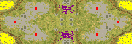
Tips: Garrison the bunkers in the center of the map right away to break up early rushes. Try to control the valleys in the north and south central areas to gain a significant advantage. Coordinate with your allies for both attacks and defense. Watch for paradrops into your home ore fields.
Size: 116 kbs
Downloads: 298

.:: Cannis's Pretzel Logic ::.
.::[Released : 15/07/05]::.
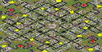
Tips: Get out there, find, and capture as many tech buildings as you can. Keep your mining operation healthy because money is not that easy to come by. Garrisons can make a big difference. There are fairly direct routes to enemy bases - don't let the road lead you astray.
Size: 132 kbs
Downloads: 303
.:: Cannis's More of Egypt ::.
.::[Released : 15/07/05]::.
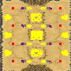
Tips: If you know Tour of Egypt, you should know what to do.
Size: 100 kbs
Downloads: 282
.:: Blade's & Cannis's Crystal Forest ::.
.::[Released : 15/07/05]::.
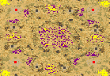
Tips: Continue to develop your mining operations throughout the game as miners will take longer and longer to return with resources. The ore mines furthest from your base produce the most ore. The cliffs around the base areas offer some opportunities for artillery action.
Size: 208 kbs
Downloads: 299
.:: Seniorwhoppy's Turtle Town ::.
.::[Released : 12/07/05]::.
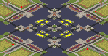
Tips: Capture the nearby oil derricks right away and use them as outposts to build defenses. Be prepared to fight for the central ore. Naval maneuvers are always an option.
Size: 88 kbs
Downloads: 283
.:: Cannis's Below Sea Level ::.
.::[Released : 29/04/05]::.
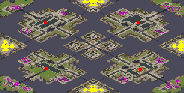
Tips: Miners should need no micromanaging during the early part of the game, but later, ore mining can become a major point of conflict between adjacent players. Make use of garrison opportunities for defense and to deny choke point passage to your enemy. Going naval can be a highly effective tactic, but don't skimp on the size of your fleet.
Size: 192 kbs
Downloads: 299
.:: Truefeel's Rockets 2 ::.
.::[Released : 19/03/05]::.
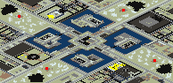
Tips: Be careful around the city, as there are several surprises lying in wait. Don't turtle either, you'll need to expand your base in order to reach more amounts of ore and gems to keep your cash flowing in steadily.
Size: 124 kbs
Downloads: 315
.:: Cannis's Canyon Fodder IV ::.
.::[Released : 24/03/04]::.
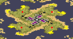
Tips: Money is tight, so repair your bridge and send your miners to the gems in the city right away. Retain control of at least one quadrant of the city even after the gems are gone, since the ore mines there are 10 times more productive than the ore mines you'll find at home. Naval war is often the decisive factor.
Size: 148 kbs
Downloads: 297
.:: Cannis's Desert Pacific ::.
.::[Released : 20/02/04]::.
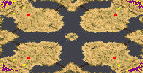
Tips: Resources are initially plentiful, but this will change in prolonged games. Tech up while you can.
Size: 184 kbs
Downloads: 290
.:: Dark Scorpion's Matrices ::.
.::[Released : 09/02/04]::.
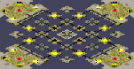
Each base area has two enhanced Oil Derricks that will provide more cash per 'load' and a Secret Lab that may provide some useful technology for your campaign. In the centre of the map, there is a Tech Machine Shop that will repair your vehicles 100% faster than normal and due to its exposed location - the machine shop has been strengthened considerably.
There are added hazards - Yuri has seen fit to equip his Virus snipers with C4 explosives, though this raises her cost, it also makes her far more deadly. Warning; Force shields have no effect here... though the other super weapons aren't so inhibited.
Beware the Matrices.
Tips: Build plenty of miners; they will spend most of their time in transit to the ore fields. There may only be one land entrance to your base - but it is on the cliff that gives you access to the matrices and as such, artillery will have an extra layer of protection as well as increased range. Capture and keep all the tech. structures you can get your hands on.
Size: 132 kbs
Downloads: 327
.:: Cannis's Sand Snakes ::.
.::[Released : 12/01/04]::.
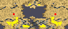
Tips: Resources are ample as long as you have enough miners working. Tunnel entrances serve as choke points for defense. Naval superiority can make all the difference.
Size: 104 kbs
Downloads: 274